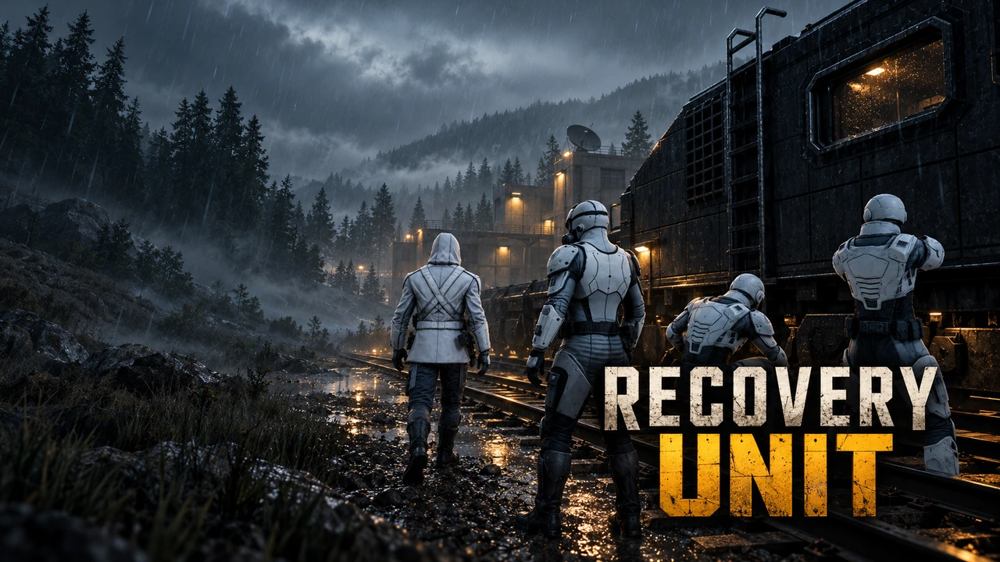
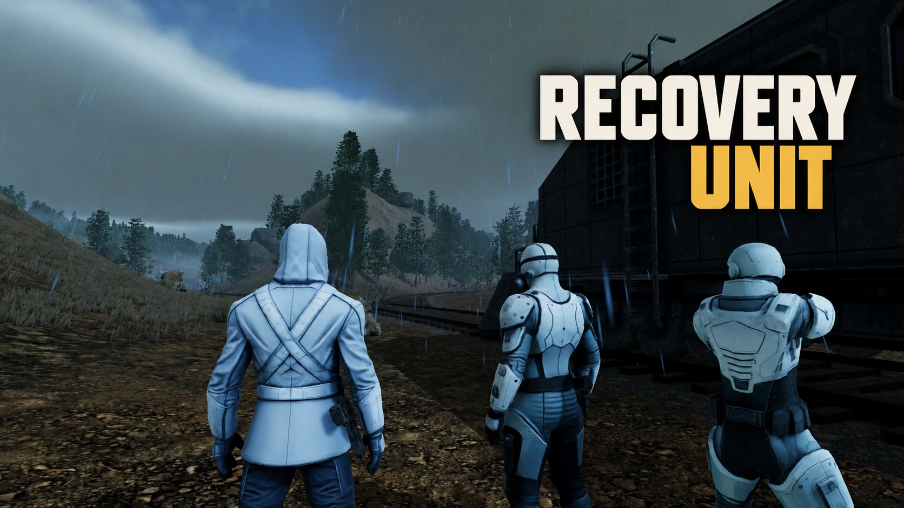

In Development
Recovery Unit
Four scientists. One armored train. Explore a world devastated by disease, recover vital samples, and search for a cure together.
Qubicode / Recovery Unit
A closer match to the game: the crew and train from your screenshot, muted rainy lighting, and a clean white-and-amber title. Compare the revised card below. The original homepage artwork has been kept. This proposal is archived for reference.

Four scientists. One armored train. Explore a world devastated by disease, recover vital samples, and search for a cure together.

Four scientists. One armored train. Explore a world devastated by disease, recover vital samples, and search for a cure together.